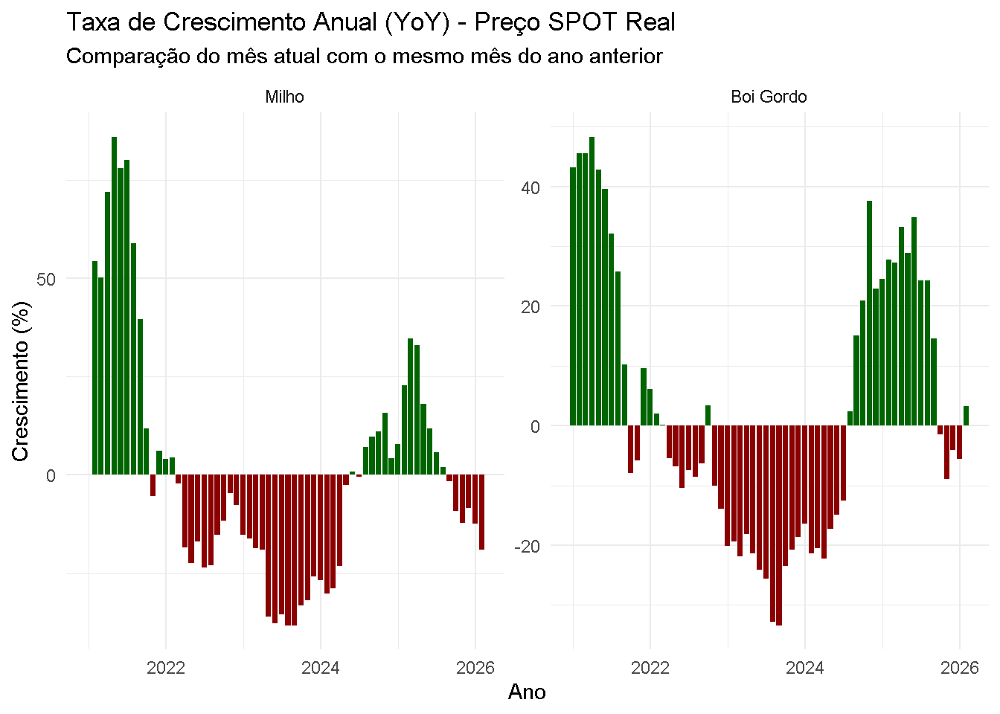
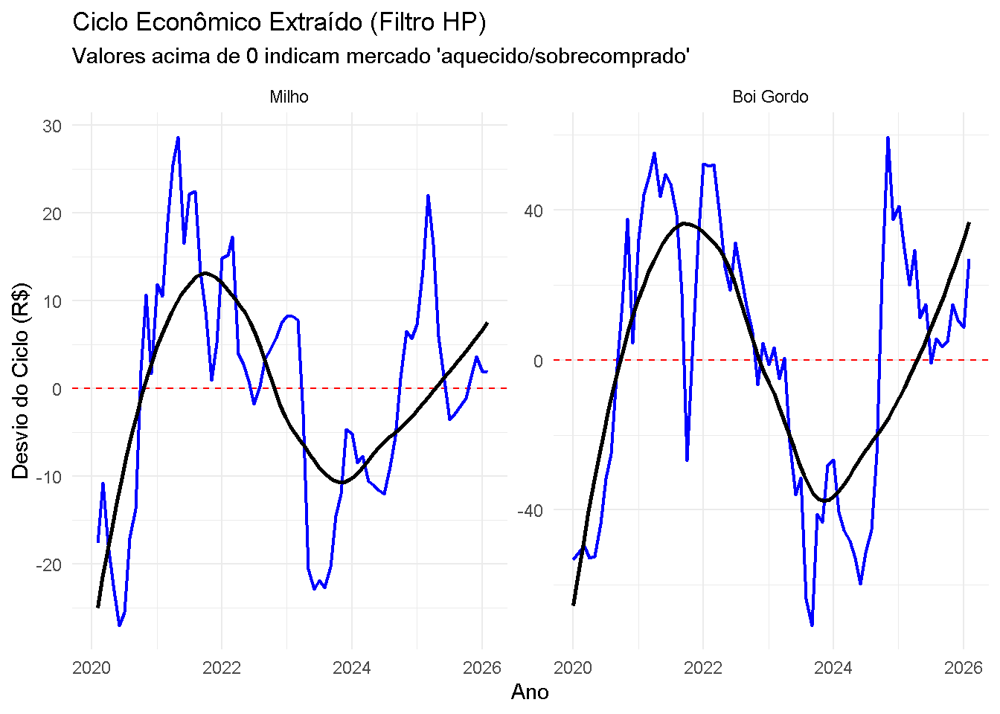

O seguinte objeto é mascarado por 'package:dplyr':
group_rows
library(rbcb) # Puxar IPCAlibrary(mFilter) # Extração de ciclos (Hodrick-Prescott)
Warning: pacote 'mFilter' foi compilado no R versão 4.5.3
library(forecast) # Modelos ARIMA e ETS (Médias)
Warning: pacote 'forecast' foi compilado no R versão 4.5.3
library(scales) # Formatação de eixos
Anexando pacote: 'scales'
O seguinte objeto é mascarado por 'package:purrr':
discard
options(scipen =999999)
Warning in options(scipen = 999999): invalid 'scipen' 999999, used 9999
Carga
# Função robusta para ler suas planilhas mensaisler_mensal <-function(caminho, nome_commodity) {# Lendo o CSV (se for Excel, você pode trocar por readxl::read_excel) df <-read.csv(caminho, header =TRUE, sep =",", dec =".", stringsAsFactors =FALSE)# Forçando os nomes exatos das suas colunascolnames(df) <-c("Data", "SPOT", "FUT", "BASE") df <- df %>%mutate(# parse_date_time aceita tanto "dd/mm/yyyy" quanto "mm/yyyy"Data =parse_date_time(Data, orders =c("dmy", "my", "ymd")),AnoMes =floor_date(Data, "month"),# Garantindo que os valores sejam numéricos (trocando vírgula por ponto se houver)SPOT =as.numeric(gsub(",", ".", as.character(SPOT))),FUT =as.numeric(gsub(",", ".", as.character(FUT))),BASE =as.numeric(gsub(",", ".", as.character(BASE))),Commodity = nome_commodity ) %>%filter(!is.na(Data), !is.na(SPOT)) %>%arrange(Data)return(df)}# Ajuste a extensão (".csv") conforme os seus arquivos reaisdf_milho <-ler_mensal("Milho_Mensal_OFC.csv", "Milho")df_boi <-ler_mensal("Boi_Mensal _OFC.csv", "Boi Gordo")# Unindo as duas basesdf_mensal <-bind_rows(df_milho, df_boi) %>%mutate(Commodity =factor(Commodity, levels =c("Milho", "Boi Gordo")))
DEFLACIONAMENTO (PREÇO NOMINAL VS REAL)
datainic <-min(df_mensal$AnoMes)datafim <-max(df_mensal$AnoMes)# Captura do IPCA via API do Banco Centralipca_raw <-get_series(433, start_date = datainic) df_ipca <- ipca_raw %>%rename(AnoMes = date, ipca_var =`433`) %>%mutate(AnoMes =floor_date(AnoMes, "month"),indice =cumprod(1+ (ipca_var /100)) )indice_hoje <-tail(df_ipca$indice, 1)# Unindo e criando a coluna SPOT_Real (Preço Deflacionado)df_mensal <- df_mensal %>%left_join(df_ipca %>%select(AnoMes, indice), by ="AnoMes") %>%mutate(SPOT_Real = SPOT * (indice_hoje / indice) )
# Cálculo da variação percentual MoM (Mês a Mês) e YoY (Ano a Ano)df_mensal <- df_mensal %>%group_by(Commodity) %>%arrange(AnoMes) %>%mutate(Cresc_Mensal = (SPOT_Real /lag(SPOT_Real, 1) -1) *100,Cresc_Anual = (SPOT_Real /lag(SPOT_Real, 12) -1) *100 ) %>%ungroup()# Gráfico da Taxa de Crescimento Anualggplot(df_mensal %>%filter(!is.na(Cresc_Anual)), aes(x = AnoMes, y = Cresc_Anual, fill = Cresc_Anual >0)) +geom_col(show.legend =FALSE) +scale_fill_manual(values =c("TRUE"="darkgreen", "FALSE"="darkred")) +facet_wrap(~ Commodity, scales ="free_y") +labs(title ="Taxa de Crescimento Anual (YoY) - Preço SPOT Real",subtitle ="Comparação do mês atual com o mesmo mês do ano anterior",x ="Ano", y ="Crescimento (%)") +theme_minimal()

DECOMPOSIÇÃO E EXTRAÇÃO DE CICLOS (HODRICK-PRESCOTT)
df_ciclos <- df_mensal %>%group_by(Commodity) %>%filter(!is.na(SPOT_Real)) %>%mutate(# Frequência 14400 é o consenso econométrico para dados MENTAISTendencia =as.numeric(hpfilter(SPOT_Real, freq =14400)$trend),Ciclo =as.numeric(hpfilter(SPOT_Real, freq =14400)$cycle) ) %>%ungroup()# Gráfico do Ciclo Isoladoggplot(df_ciclos, aes(x = AnoMes, y = Ciclo)) +geom_hline(yintercept =0, color ="red", linetype ="dashed") +geom_line(color ="blue", linewidth =0.8) +geom_smooth(method ="loess", se =FALSE, color ="black", alpha =0.3) +facet_wrap(~ Commodity, scales ="free_y") +labs(title ="Ciclo Econômico Extraído (Filtro HP)",subtitle ="Valores acima de 0 indicam mercado 'aquecido/sobrecomprado'",x ="Ano", y ="Desvio do Ciclo (R$)") +theme_minimal()
`geom_smooth()` using formula = 'y ~ x'

PREVISÃO 12 MESES: ARIMA VS ETS (MÉDIAS)
rodar_previsoes_comparadas <-function(serie_mensal, h_meses =12) {# Cria o objeto de Time Series (ts) com frequência 12 (Mensal) ts_data <-ts(serie_mensal, frequency =12)# Modelo 1: ARIMA mod_arima <-auto.arima(log(ts_data)) prev_arima <-forecast(mod_arima, h = h_meses)# Modelo 2: ETS (Suavização Exponencial / Médias Ponderadas) mod_ets <-ets(ts_data) prev_ets <-forecast(mod_ets, h = h_meses)# Dataframe de saídadata.frame(Mes_Projetado =1:h_meses,Preco_ARIMA =exp(as.numeric(prev_arima$mean)),Preco_ETS =as.numeric(prev_ets$mean) )}df_projecoes <- df_mensal %>%group_by(Commodity) %>%summarise(Ultimo_Mes =max(AnoMes),Projecoes =list(rodar_previsoes_comparadas(SPOT_Real, h_meses =12)) ) %>%unnest(Projecoes) %>%mutate(Data_Proj = Ultimo_Mes %m+%months(Mes_Projetado))# Pegando apenas os últimos 36 meses históricos para o gráfico ficar bonitodf_historico_recente <- df_mensal %>%group_by(Commodity) %>%slice_tail(n =36) %>%select(Commodity, Data_Proj = AnoMes, Preco_Real = SPOT_Real) %>%mutate(Tipo ="Realizado (Histórico)")# Pivotando as projeçõesdf_proj_long <- df_projecoes %>%select(Commodity, Data_Proj, Preco_ARIMA, Preco_ETS) %>%pivot_longer(cols =c(Preco_ARIMA, Preco_ETS), names_to ="Tipo", values_to ="Preco_Real") %>%mutate(Tipo =recode(Tipo, "Preco_ARIMA"="Projeção: ARIMA", "Preco_ETS"="Projeção: Médias (ETS)"))# Juntando histórico e futurodf_grafico_final <-bind_rows(df_historico_recente, df_proj_long)# Gráfico Finalggplot(df_grafico_final, aes(x = Data_Proj, y = Preco_Real, color = Tipo, linetype = Tipo)) +geom_line(linewidth =1) +scale_color_manual(values =c("Realizado (Histórico)"="black", "Projeção: ARIMA"="#e74c3c", "Projeção: Médias (ETS)"="#3498db")) +scale_linetype_manual(values =c("Realizado (Histórico)"="solid", "Projeção: ARIMA"="dashed", "Projeção: Médias (ETS)"="dotdash")) +facet_wrap(~ Commodity, scales ="free_y", ncol =1) +labs(title ="Previsão de 12 Meses: ARIMA vs ETS (Médias Suavizadas)",subtitle ="Projeções baseadas na série SPOT Real",x ="Ano/Mês", y ="R$ / Saca ou @ (Real)", color =NULL, linetype =NULL) +theme_minimal() +theme(legend.position ="bottom")
Warning: Removed 1 row containing missing values or values outside the scale range
(`geom_line()`).